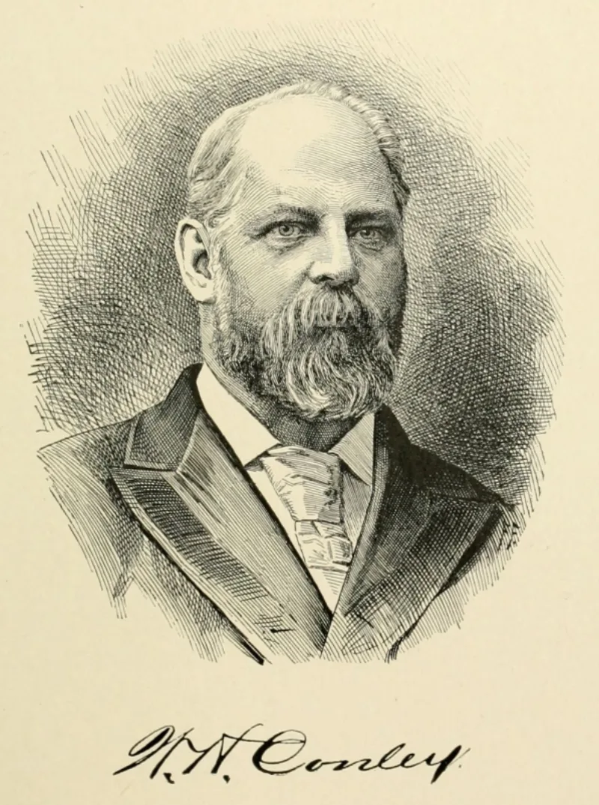
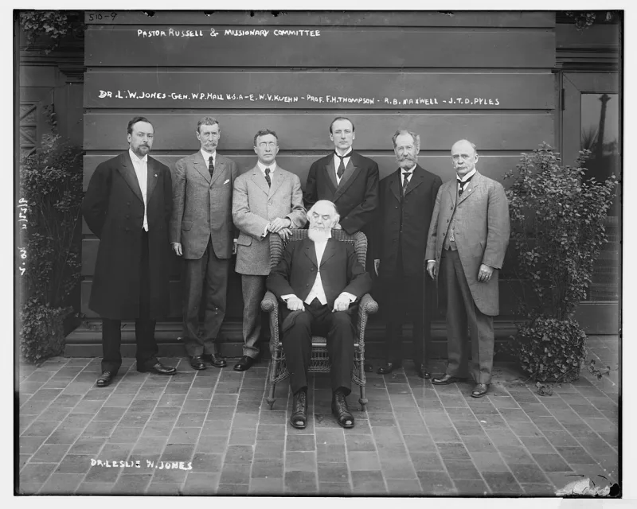

Why 'they worship Russell' dates your source
Don't useThe Witness answer holds up. Do not lead with this one.
The claim to stop making
That Jehovah's Witnesses revere or follow Charles Taze Russell as a man. It comes out of anti-cult books written a long time ago.
What is actually true
Today they do not worship Russell, and few of them read him. The Society dropped much of what he taught.
It dropped his pyramid teaching. It dropped the details of his dates.
It dropped his view of the higher powers. It took a new name in 1931, partly to shed the Russellite label.
His books are not in print, and not in use.
Why it costs you
Call them Russellites and any Witness can place your source. It was written before they were born.
It tells them you have not looked at the faith as it is now.
The real point underneath it
There is a fair version of this. They grant the Governing Body a power much like the one they attack in other churches.
Make that point straight. Use the sole-channel material, and what Geoffrey Jackson said on oath.
How strong is this argument?
Do not use this one. Use Russell only for what he wrote.
He taught that the body of Jesus may have been turned to gas. That is a real quote.
So is his line that Jesus was rightly worshipped.
What to say
"I'm not interested in Russell as a person. I'm interested in who has authority now, and where that authority comes from."



How they answer this — at its strongest
There is nothing to answer: modern Witnesses keep their distance from Russell.
Not applicable. This entry exists to stop the site from using a false claim. Today's Witnesses do not worship Russell, and few of them read him. The Society dropped his pyramid teaching, his dates and his view of the higher powers. It took a new name in 1931, partly to shed the Russellite label.
The verdict
Do not use this one. Use Russell only for what he actually wrote.
False as stated. Modern Witnesses distance themselves from Russell. Use Russell only for what he documents. There is the 'dissolved into gases' resurrection teaching. And there is the early instruction that Jesus was properly worshipped. Never use him as a personality-cult charge.
Sources
- Wikipedia — Watch Tower Bible and Tract Society history
- jw.org — history of the name Jehovah's Witnesses